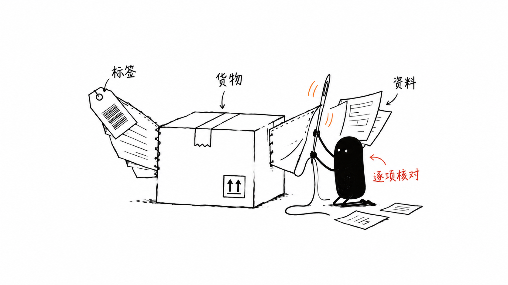

香港空运操作笔记：过港、交仓与申报
从报关方式、深圳备货到香港交仓，整理香港出运中需要逐项确认的环节，记录我的日常业务经验。
香港出运涉及的不只是香港仓库。深圳备货、报关、过港运输、香港交仓和货物申报，前后需要衔接。这篇笔记整理我在日常业务中关注的几个环节。
本文是流程经验分享。具体货物能否接受、送仓安排、截单时间与费用，应按当次运输方案向操作及承运渠道确认。
一、先确认报关方式，再安排送货
接到香港出运需求后，先确认采用哪种报关方式，再落实深圳收货点、资料和车辆安排。不同方式对应的操作要求不能混为一谈。
在本文所涉及的操作安排中，一般贸易与快件货物分开安排车辆。客户自行送香港和委托安排中港运输，也需要分别确认提货、交仓及费用范围。
同样是“哪天到香港”，背后还包括谁送货、送哪里、采用什么方式以及什么时候可以交接。把这些条件放在一起确认，才能排出可执行的安排。
二、从计划航班日倒推准备工作
排程时，可以把计划航班日起飞日记为D-0，再向前核对深圳交货、报关、过港与香港交仓所需的准备时间。这个方法用于检查衔接，不代表固定天数或运输时效承诺。
在深圳备货阶段，核对件数、重量、尺寸、包装和标签信息。需要客户提供的清单及申报资料，也应提前准备，避免到交仓时才发现缺项。
三、把“截单、到仓、可提货”分开看
截单时间、装车时间、过关时间、到仓时间、卸货完成时间和可提货时间，是不同节点。到仓不代表已经完成卸货，更不代表货物已经可以提走。
如果使用9610相关安排，需要核对该安排的适用条件，不能把一张班次表直接套用到所有快件业务。晚班涉及跨日时，沟通中写明具体日期，避免只写“凌晨”或“明早”。
过往车辆记录可以帮助复盘，但单次过港耗时不能当作固定班次或时效保证。计划发生变化后，应重新核对后续交仓和航班衔接。
四、香港交仓前，再确认一次接收条件
不同航司或渠道可能对应不同仓库。送货前，核对当票货的仓库名称、地址、收货时间和预约要求，不能直接沿用上一票货的送货指示。
涉及提货、停车、登记或夜间操作等费用时，先确认由谁承担、按什么口径计收。读到某个夜间收费档位，也不能据此推定仓库在该时段一定接受送货。
五、货物属性和资料要对应
订舱时说明实际货物属性，包括是否带电，以及是否含液体、粉末或磁性等。根据货物情况与渠道要求，准备相应资料。
MSDS、UN38.3等文件是否需要提供、适用哪些包装或运输要求，应以实际货物和当前要求为准。文件提交完成，不等于货物已经获得承运接受；不确定的部分需要进一步确认。
标签、清单、货物描述与申报资料应相互对应。小黑把资料与纸箱缝在一起的配图，表达的就是交接前逐项核对的习惯。
六、每票业务可按这七项复核
1. 品名、件重尺、包装及货物属性是否明确？ 2. 报关方式与深圳送货安排是否对应？ 3. 报价范围、币种和另外计收的费用是否清楚？ 4. 标签、清单和所需申报资料是否齐全？ 5. 截单、装车、过港、到仓与提货节点是否分别确认？ 6. 香港仓库的地址、时间及接收条件是否适用本票？ 7. 尚待确认的事项，是否已有明确的跟进结果？
先把报关方式、货物属性和资料条件落实，再排运输节点。报价、装车、交仓、货物接受与航班起飞是不同状态，分别跟进，才能知道一票货真正走到了哪一步。
配图①：不同报关方式分开安排车辆。 配图②：交仓前核对货物、标签与资料。
